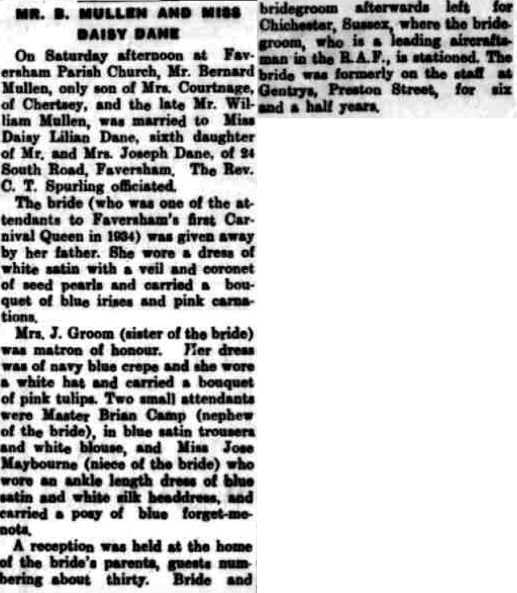

Bernard William Mullen 1916 - 1977
[ Home ] | [ Calendar ] | [ Surnames Index ] | [ Family History ]Bernard Mullen, the husband of Daisy Lillian Dane (the second cousin twice-removed on the mother's side of Nigel Horne), was born in Wolverhampton, Staffordshire, England on Apr 11, 1916<span class="citation">1,2</span> and married Daisy (with whom he had 2 children: <a href="I2313.html">Bernice</a> and <a href="I2312.html">Anthony B</a>, along with 1 surviving child) at Faversham Parish Church, Faversham, Kent, England on Apr 16, 1938<span class="citation">4</span>. In 1977, he lived at 49 Crow Hill, Broadstairs, Kent. <p>He died on Nov 8, 1977 in Thanet, Kent<span class="citation">2,3</span>.
Children
- Bernice was born on Mar 31, 1942
Citations
- England & Wales births 1837-2006 - Findmypast
- England & Wales deaths 1837-2007 - Findmypast
- England & Wales Government Probate Death Index 1858-2019 - Findmypast
- England & Wales Marriages 1837-2005 - Findmypast
Media
Bernard William Mullen - Probate

Faversham News - 23 Apr 1938

England & Wales marriages 1837-2005 - BMD/M/1938/2/AZ/001020/063
England & Wales deaths 1837-2007 - BMD/D/1977/4/AZ/000768/112
England & Wales births 1837-2006 - BMD/B/1916/2/AZ/001027/089
England & Wales Government Probate Death Index 1858-2019 - GBOR/GOVPROBATE/C/1978-1978/00150020
Family Tree

Generated by Ged2Site. Last updated on Jul 20, 2025